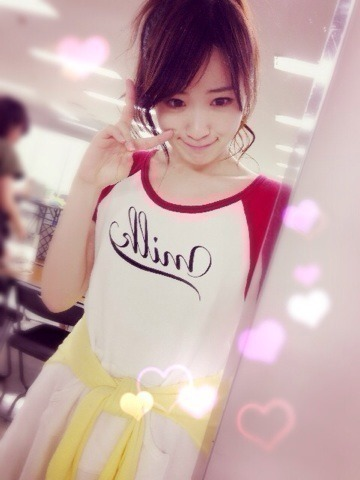

2014/0722Tue（´-`）.｡oO(かずみ ん×294
わぉ！
早速前回のブログ！
質問コメント沢山だ(∩*´ω` *∩)
ありがとうございますっ♪♪
嬉しいわぁ〜♪
300回目のブログから
順々に質問返していくね(*´ω`*)ﾉ
先週の乃木どこでですね〜
夏休みの宿題をすることになりました！
私の宿題は
ウェスト−5cm！！！
いぇ〜い((( ´ ▽ ` )))88888
達成できなかった場合の
罰ゲームにですね、最初
乃木どこ2回休み
を掲げていました！！
バナナマンさんはユーモラスに
ずるいとおっしゃってましたが、
その後の大事なところをカットされてて
受け取り方を間違えている方が
いたらショックだなぁと思ったので
一応言わせて！
みんなが思っている以上に
乃木どこは昔から私のステータス！
週に一度の大切な日。
乃木坂ファンの人が本当に楽しみにしてくれてる大切な番組。
めっちゃ影響力高いし！
ただそれを踏まえてる上でガチで挑むというのをわかってほしかったのです...
ただ休みたいからだと思われたら
ショックだなぁと思ったので
書きました！！！
一応！ごめんね∩(´;ヮ;｀)∩
メンバーのみんなに
かずみんがいなくなっちゃだめ
と言ってもらえたのは...正直
涙が出るほど嬉しかったです(Ｔ＿Ｔ)
でも結局ですね↑はガチすぎて
笑えなかったので...σ^_^;
＊ブログに一週間キス顔アップ
＊剣道のフル装備で収録
になりましたσ(ﾟ∀ﾟ*)
わーぉ...！
ある意味つらーい((((；ﾟДﾟ))))))
キス顏なんてキャラじゃない...笑
真夏とかひめたんが似合うよ〜♡
昨日の握手会でですね、
『宿題達成しなくてもいいよ』
『罰ゲーム見たい！』
とめっちゃ言われました(((/*0*)/笑
いやいやいやいやいや(⌒-⌒; )
優しいけど複雑だな！笑笑
でも恥ずかしくてしょうがないし、
嘔吐者も続出すると思うので
くびれ作成、
本当に頑張ります！！！
昨日の個別握手会は
久しぶりにポニー♡

みなみと相変わらず前髪シンメ！
KちゃんのMVで着た服っ

あとパリの香水を着けたよっ

ん〜甘くていい香り(*´ｰ`*人)
みんなの手にすりすりしたから
届いたかなぁ？？
ちなみに握手会でみなさんが
教えてくれた髪型の意見は
前髪ありのボブが
わりと人気でしたね〜！！！
あとはやっぱり人それぞれ♪
聞けてよかった♪
いつも来てくださる方も
初めての方も
久しぶりの方も
みーんならぶ！
ありがとね(*´ｰ`*人)
そして、今日で市來先生が
乃木坂46を卒業...(´;ω;`)
んー...
大好きだぁーーー（；＿；）♡
初期。
君の名

昨日

私がれなりんのことを
市來先生と呼び始めたのは
乃木どこのスカイツリーとか行った
ロケにて地図を読み始めたれなりんを
見て先生っぽいなぁと思ってから！
まさか先生というあだ名が
メンバーやスタッフ内で
流行るとは...(*ﾟﾛﾟ)!!
これからも市來先生は私の先生！
最後の市來先生とファンの方の姿、
キラキラしてた...
ずっと...友達だぞ〜(｀･ω･´)b
--------
今日は素敵すぎる取材です♡
夢は口にすれば叶うって本当かも。
頑張ります！！！
それでは今日も明日も
ポジピースヽ(´>∀<`*)ﾉ
2014/07/22 10:30


コメント(677)
かずみん可愛い
バケラッタ
昨日は号泣しちったT^T
鍵開けしないっていったけど京都で鍵開けしようかなー＼(^o^)／
高山LOVEアメイジング＼(^o^)／
れなりん卒業はショックだけどがんばってほしいな～！
頑張ってください！
肘こすり最高だぜ
その服たしかマザー牧場で着てた服だよね？(´,,•ω•,,｀)(間違ってたらごめんw)
その服めちゃくちゃかわいいよ！♡
前髪ボブの一実さんはたしかに可愛いから見たいなぁ（´-`）.｡oO（♡
ってことでこのへんで！
くびれがんばってつくってね！笑
大好きです
キス顔需要が高すぎる
いきたかった(´つヮ⊂)ｳｵｵwww
握手会お疲れ様〜（；＿；）
行けなくてごめんね！（；＿；）♡
8月は1部2部行くよ〜( *´ω`* )♡
ー5cmがんばれ！！！
私も体重ー5kg減らす！！！
私もがんばるね！！！
れなりん卒業...（；＿；）
悲しいけどこれからもがんばれなりんだね！
ポジティブsay!
かずみん昨日はありがとうね(´･Д･)」
とても楽しかったよ！やっぱり今の俺の中で1番かずみんと会った時が幸せかなと思ったよw
また2日に行くからその時はよろしくね( *｀ω´)
かずみんいつもありがとう！
ハギです！
昨日はホントに楽しかったよー！
ポニテの一実さんと握手できなかったのがちょっと残念だけど 笑
ウエスト無理しない程度に頑張ってね 笑
市來ちゃんのセレモニー俺も参加してたよ
いろいろ思い出すとホント感慨深いね(*_*)
ちゃんと最後見届けられたから満足かなｂ
それではまたっ
次は8/2だねー(￣▽￣)
浴衣待ってるよー\(//∇//)\笑
夏休み宿題
成功も失敗もみたい（笑）
めっちゃ会いたかったのにー（´-`）.｡oO（
だから代わりに言わせて…
一実愛してる
乃木どこ休んじゃダメ
フランスの香水いい匂いしそう！
ぜひ、キス顔＋剣道フル装備が見てみたい！！！
ヨロシクねー
まいまいレーンによく並んでたんだけど、いつものかずみんの元気な声が聞こえてかずみんにも行きたくなった！
かずみん頑張るしかー！
自分もばつゲーム見いな？(^^)
今でもめちゃくちゃ細いと思うけど
もっと細くなろうとは…
ストイックさアメイジング(゜д゜)
ぜひぜひ頑張って下さい！！
…でも無理はダメだよ(T-T)
ミジンコって言ってごめんね笑
自分もばつゲーム見いな？(^^)
今でもめちゃくちゃ細いと思うけど
もっと細くなろうとは…
ストイックさアメイジング(゜д゜)
ぜひぜひ頑張って下さい！！
…でも無理はダメだよ(T-T)
あーさびしいーよー。。
先生には頑張ってほしいねほんとに(`･ω･´)
あと、かずみん、可愛いすぎ。←
乃木どこの宿題本当は達成して欲しいけど
それ以上にかずみんのキス顔が見たいので
あんまり頑張らないで欲しいかも
かずみんの香水すごく良い匂いだった
僕には届いてたよ
かずみん本当に憧れっっ！！！
大好きです(((o(*ﾟ▽ﾟ*)o)))
わかってたよかずみん大丈夫だよ(´；ω；｀)
かずみんいないのぎどこはさみしいから、あの罰ゲームなくなってよかった。あとキス顔みたい！！！笑笑
ん〜〜〜〜ポニテもかわい〜〜〜〜
京都の握手会行ったよ‼︎‼︎
ただしく言えば
かずみんと握手はしてないけど…笑
でも、となりのレーン並んでる時に
かずみんが手振ってくれました‼︎‼︎‼︎‼︎‼︎‼︎‼︎
すごく嬉しくて飛び跳ねてたよ〜
かずみん優しい〜ってなった‼︎‼︎
ありがと(｡-∀-｡)
キス顔期待！！！！
アメイジング！笑
かずみんおもしろくてかわいいのはずるいよ！もー完璧じゃん！
これからも応援してるよ(^○^)
ウエスト-5cm頑張ってね。でも、罰ゲーム、特にキス顔みてみたいです。
かずみんが考えた罰ゲーム、乃木どこ2回休むの休みたいからだとは全然思わなかったよ。
乃木どこにかけているかずみんの想い伝わってくるから。
いいなー。パリの香水どんな香りなの？
自分も、頑張って生きていきたいです。
夏休みの宿題ね……
くびれ作るの頑張ってほしいけど、
罰ゲームしてほしい(笑)
罰が二つなんてさすがです！！
明後日（２３日）に試合があるので気合いを入れてください、とお願いしたら・・・
｢ポジティブ！｣
と言っていただき感激しました。
生ポジティブ、気合い入りましたっ。
試合、頑張ります。
今日からめちゃくちゃ暑くなるとか・・・。
かずみんさんも体調に気をつけてお仕事頑張ってください!!
キス顔見たいから｡｡｡ww
コメントする